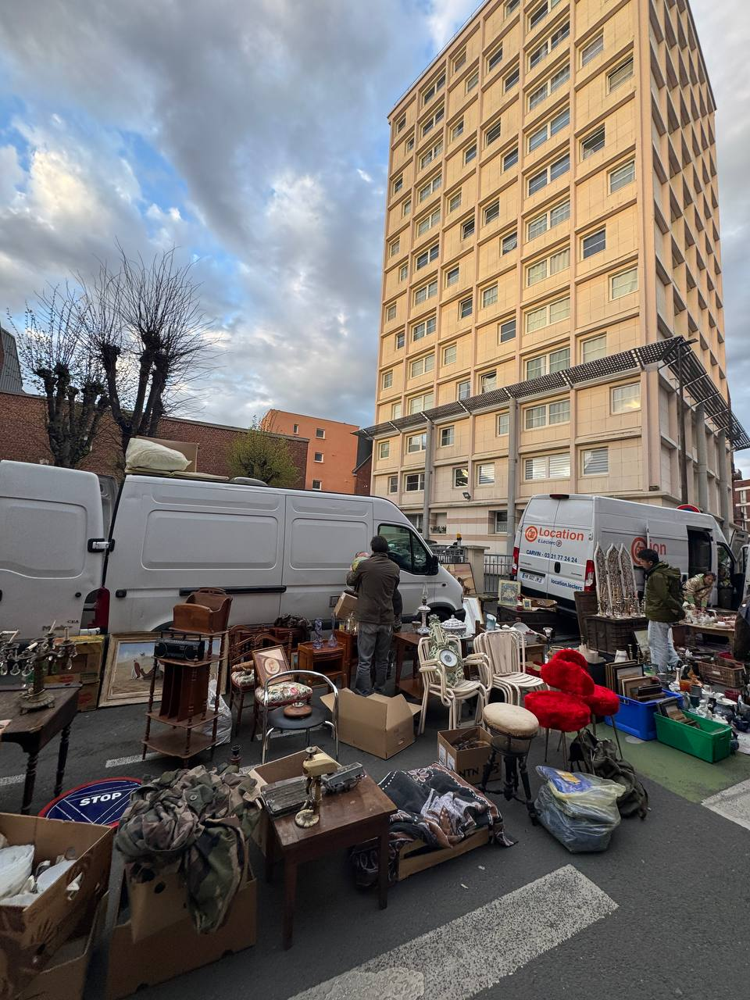
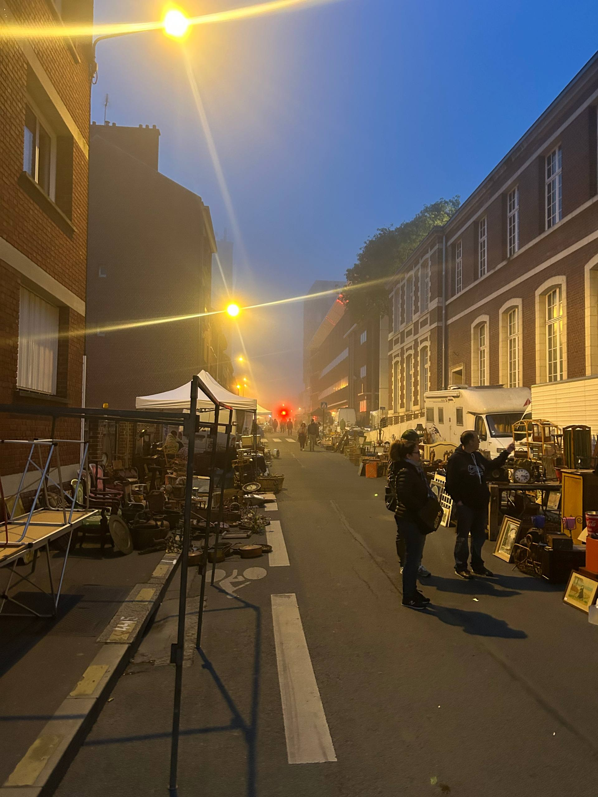
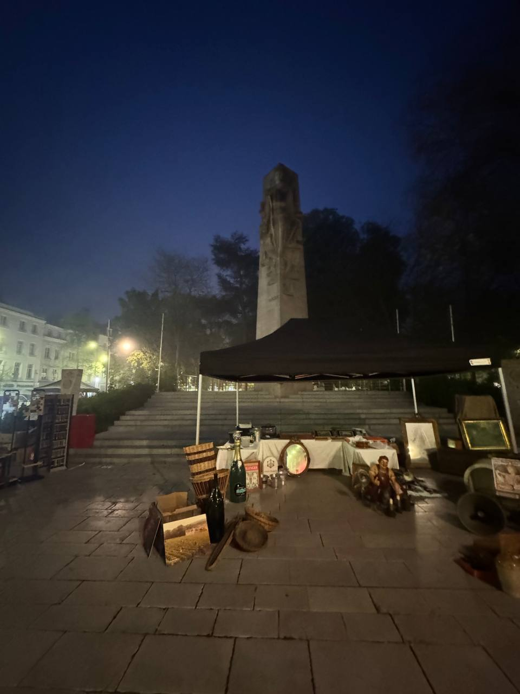
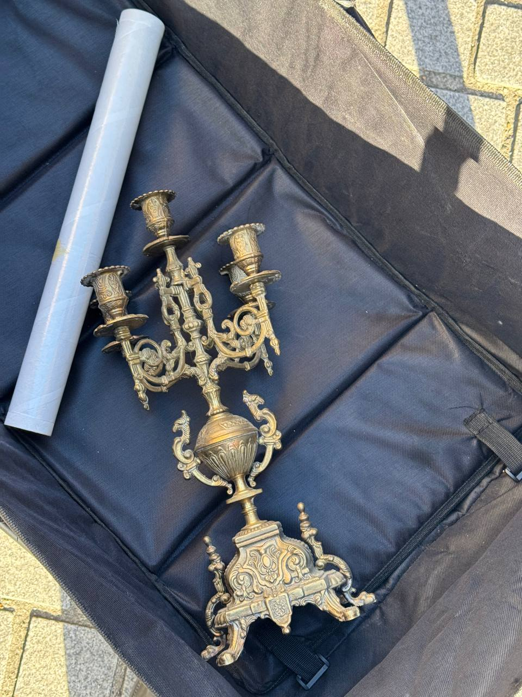
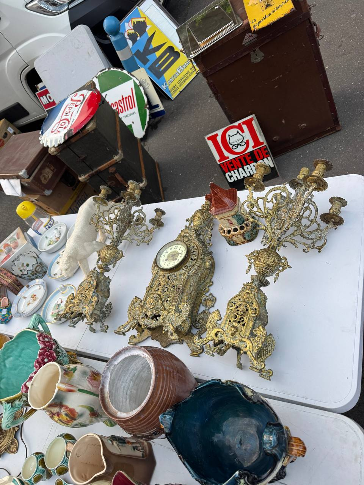
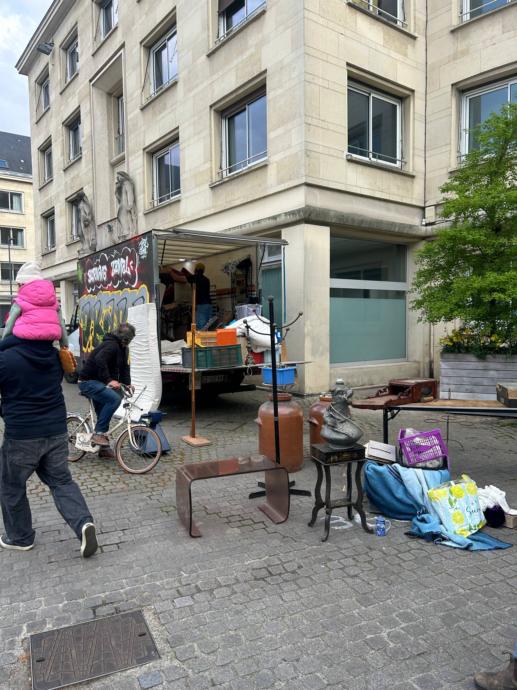
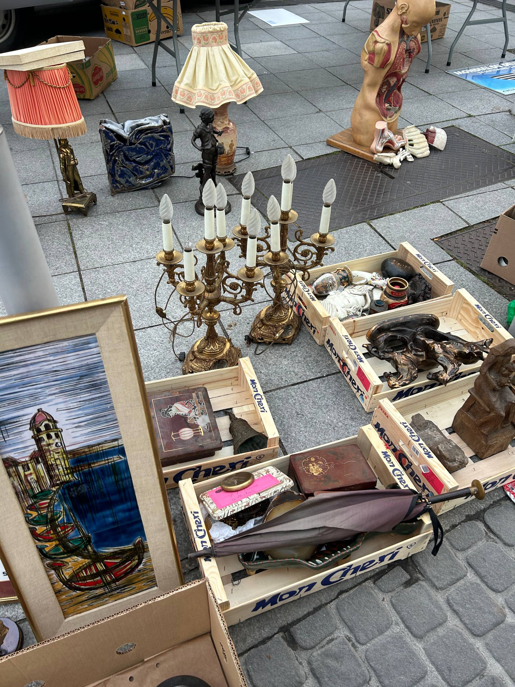
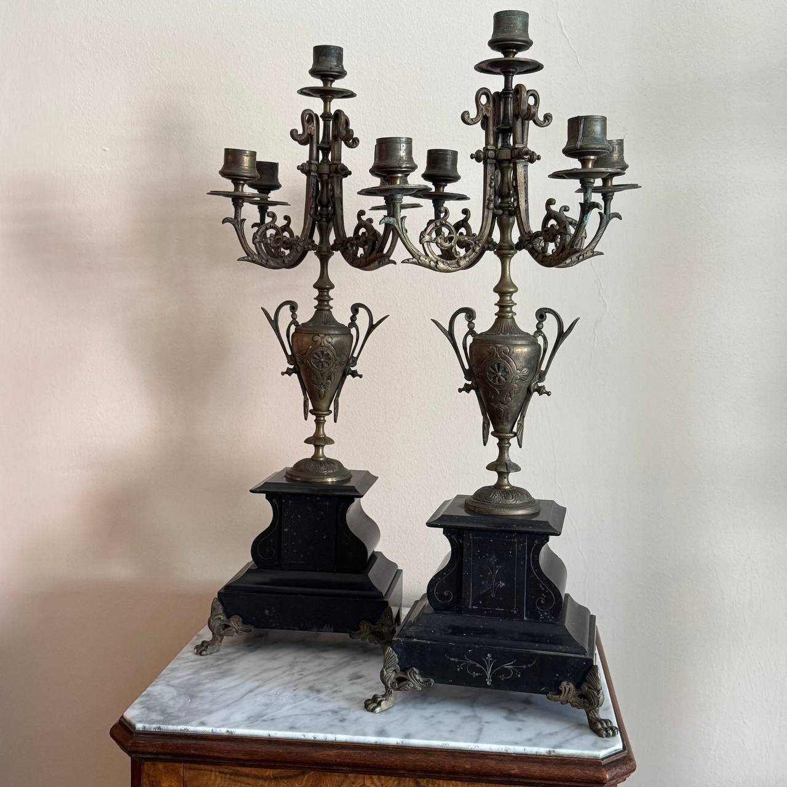

Last updated: 4 May 2026
Best French Brocantes 2026: UK Reseller Sourcing Calendar
Around 11,200 brocantes, vide-greniers and braderies are scheduled across France between May and September 2026. About 1,250 of them sit in Hauts-de-France — the closest French region to Calais and the Eurotunnel terminal. That’s the practical case for a UK reseller: even a one-day trip to northern France usually overlaps with several events.

This guide is a 2026 calendar of the events worth planning around. We’ve mixed two sources: the public listings on Brocabrac (community-submitted, 11,864 events catalogued at time of writing), and the well-documented annual mega-events that don’t always show up on aggregator sites because the city or tourism office runs them directly. Every claim about size or attendance is sourced.
“After our first sourcing trip we said we’d come back to find actual brocantes — not just shops. So this time we built the calendar properly.” — Oleksandr Prudnikov, FlipperHelper developer and active reseller
How we built this calendar
Brocabrac.fr is the largest community calendar of French flea markets. It exposes a full sitemap of every listed event, including a structured schema.org block with date, time, location, GPS coordinates and organiser. We pulled the whole inventory in May 2026 — 11,864 events — and ranked them by size signals like edition number (e.g. “42ème édition”), exposants count mentioned in the description, and how many separate events were listed at the same town on the same day.
For the May 2026 update of this guide, we extended the verification step. Every Brocabrac event in our 8 target regions was cross-checked against six independent sources:
- vide-greniers.org and toutes-les-brocantes.fr — the next two largest community aggregators
- SNCAO-GA labellised fairs — the national antique-dealer syndicate’s Authenticité-Qualité label
- Regional press — Ouest-France and actu.fr articles mentioning the event
- OpenStreetMap venue tags — for permanent flea-market and antique-shop locations
- Wikipedia FR — for named annual events with their own articles
- Reddit — English- and French-language threads mentioning specific brocantes
Of around 3,700 events in our 8 target regions, only ~200 reach our top tier — confirmed by at least three independent sources. Events listed below all sit at this top tier or are direct mega-events that any UK reseller researching France should know about. Events we couldn’t verify externally are not in this guide.
What are the biggest French brocantes for UK resellers in 2026?
Five mega-events anchor the 2026 calendar for UK resellers, ranked by accessibility from a Channel ferry or Eurotunnel:
- Réderie d’Amiens — 19 April and 4 October 2026 (twice a year)
- Grande Braderie de Lille — 5–6 September 2026
- Foire de Chatou (near Paris) — 13–22 March and 25 September–4 October 2026
- Marché aux Puces de Saint-Ouen (Paris) — permanent, every weekend
- Foire Internationale Antiquités de L’Isle-sur-la-Sorgue — Easter (2–6 April) and 14–17 August 2026
The rest of this guide breaks them down by region with verified facts and travel notes.

Hauts-de-France: closest to Calais and Eurotunnel
If you only have a long weekend, this is the region. Around 1,250 events run here between May and September 2026. It’s also where the two biggest UK-friendly mega-events take place: the Réderie d’Amiens and the Braderie de Lille.
Réderie d’Amiens 2026
- 2026 dates: Sunday 19 April and Sunday 4 October — single-day events
- Scale: ~2,000 exposants, ~80,000 visitors per edition (Amiens Tourisme)
- Distance from Calais: ~165 km, ~1h45 by car
- Type: Mixed brocante, particuliers and professionals. Strong on small antiques, kitchenalia, vintage clothing, books. Furniture present but the crowds are dense
- Access: Free entry. Heavy traffic restrictions in the centre — use the two free park-and-ride sites with shuttle
- Official site: grande-rederie-amiens.com
Two chances per year, day-trip-able from a morning Eurotunnel. This is the easiest mega-event to add to a UK reseller’s calendar.
Grande Braderie de Lille 2026
- 2026 dates: Saturday 5 to Sunday 6 September — ~34 hours non-stop, Saturday 8:00 to Sunday 18:00
- Scale: 2–2.5 million visitors over the weekend, ~10,000 vendors, around 100 km of stalls (Ville de Lille, Wikipedia)
- Distance from Calais: ~115 km, ~1h15 by car or 38 minutes by TGV from Calais-Frethun
- Type: Mixed — clothes, bric-à-brac, antiques, vintage, food. Best for small antiques, vintage clothing, collectibles, books. Furniture is present but transporting it through the crowd is hard
- Access: Free entry. Major road closures, the centre is pedestrianised. Hotels in Roubaix or Tourcoing are cheaper and book up months in advance
- 2024 status note: The 2024 Braderie was not cancelled — it was just delayed to 14–15 September because of the Paris Olympics. A separate “Braderie des Jeux” in Villeneuve-d’Ascq was cancelled and is sometimes confused with the main event
The original European mega-flea-market and a once-in-a-lifetime experience for UK resellers. Plan transport and accommodation early. Tip: Roubaix is on the metro line and stays cheaper.
Smaller Hauts-de-France events worth a date in your diary
Brocabrac surfaces several long-running annual events in the region with verified edition numbers:
- Brocante de Thourotte (60), 10 May 2026 — 42ème édition, 320 places and 230 exhibitors per the organiser. ~140 km from Calais
- Flâneries de Fresnoy-le-Grand (02), 1 May 2026 — 42èmes édition, brocante and braderie combined with a Belgian-style Gilles procession. ~140 km from Calais
- Brocante de Venizel (02), 10 May 2026 — 50ème édition, near Soissons. Annual, attendance not officially published
- Calais Vauxhall brocante, early August 2026 — ~600 vendors per regional press; effectively zero drive from the Calais ferry. Verify the 2026 date with the Ville de Calais closer to summer
Bonus stop: Emmaüs Bruay-la-Buissière
This is not a brocante — it’s a permanent destination. Bruay-la-Buissière is France’s second-largest Emmaüs site with around 10 warehouses, roughly 50 km from the Calais ferry terminal. Add a half-day stop on any Hauts-de-France run. Open weekends.


Île-de-France: Paris and the Yvelines
Around 840 events between May and September 2026. Paris itself is reachable by Eurostar from St Pancras (Calais–Paris Nord ~1h on TGV after the tunnel), so you can do a Saint-Ouen weekend without a car if you’re not buying furniture.
Foire de Chatou 2026
- 2026 dates: Spring (110th edition) Friday 13 to Sunday 22 March 2026; Autumn (111th edition) Friday 25 September to Sunday 4 October 2026 — 10 days each, 10:00–19:00
- Scale: ~330 antique dealers per edition, organised by SNCAO-GA, the national antiques dealers’ union (foiredechatou.com)
- Type: High-end antiques and brocante. Furniture-friendly — vans drive on the island. Plus regional food (the original event was the “foire au jambon”)
- Access: Paid entry: 10€ adult, 7€ student, free under 15. Free parking under Pont de Chatou. RER A to Chatou-Croissy
- Distance from Calais: ~310 km, ~3h drive
If you sell higher-end antiques or 20th-c. design, this is the Île-de-France equivalent of a serious antiques fair. The 10€ entry filters out casual crowds.
Marché aux Puces de Saint-Ouen (permanent)
- Hours: Saturday 10:00–18:00, Sunday 10:00–18:00, Monday 11:00–17:00. Friday morning 8:00–12:00 reserved for trade buyers
- Scale: ~2,000 dealers across 15 named sub-markets. The world’s largest antiques market
- Sub-markets to know:
- Marché Vernaison — the original (1885), 300+ stalls. Books, kitchenalia, fashion, bric-à-brac. Closest to a traditional brocante
- Marché Dauphine — 150+ dealers, glass-roofed. 17th–20th-c. furniture, art, antique books, old toys, vintage clothing, industrial design
- Paul Bert Serpette — 14,000 m², 370 dealers. The world’s largest single-venue antiques market. Fine furniture, silverware, design, vintage clothing. Higher price tier
- Marché Biron — 19th-c. furniture specialists
- Marché Malik — low-cost vintage clothing
- Access: Free entry. Métro 4 to Porte de Clignancourt. Eurostar Calais–Paris Nord makes this doable as a UK day trip if you travel light
- Official site: pucesdeparissaintouen.com
Puces de la Porte de Vanves (Paris 14e)
The only antique-brocante market inside Paris proper. ~380 vendors. Saturday 7:00–14:00, Sunday 7:30–19:30, every weekend. Métro 13 Porte de Vanves. Smaller and friendlier than Saint-Ouen, worth a Saturday morning if you’re already in Paris.
Brocante de l’ASPAC Pontoise (95)
One of the larger verified Île-de-France events: Sunday 24 May 2026, 8:00–18:00, ~200 exposants, 36ème édition. Held at Parc aux Charrettes, organised as a school fundraiser. 30 minutes from Paris by RER. (Ville de Pontoise.)
Normandy: Le Havre, Dieppe and Caen ferries
Around 1,060 events between May and September 2026. Useful if you take the ferry from Newhaven (to Dieppe) or Portsmouth (to Le Havre, Cherbourg or Caen).
Foire des Andaines (Bagnoles de l’Orne) 2026
- 2026 dates: 16–17 May 2026 (weekend, 6:00–19:00)
- Scale: ~2,200 vendors over 2.5 km of stalls (Orne Tourisme)
- Type: Vide-grenier scale — particuliers, household items, some furniture. Free entry
- Distance: ~1h45 from Caen ferry, ~3h from Calais
One of the highest-volume verified events on this list and the best mass-scale brocante on the Normandy side. Strong fit if you ferry into Caen.
Salon des antiquaires de Bernay (27)
Bernay traditionally runs an antiques salon at Easter weekend. Brocabrac lists a 14 May 2026 event called “Salon des antiquaires” but external sources point to Bernay’s May 2026 event being a braderie/foire-à-tout rather than a dedicated antiques salon. Verify with the Bernay mairie before driving.
What about Foire Saint-Romain de Rouen?
It comes up in searches but it’s a fairground rides festival (manèges, candy floss, food stalls), not a brocante. Skip it for sourcing.

Centre-Val de Loire: the château circuit
This region rarely appears on UK reseller lists for France — but it should. The Loire Valley brocantes attach themselves to the famous châteaux, which means events with weight. Drive time from Calais is 4–5 hours, so this is a long-weekend region rather than a day trip. From Caen ferry or Le Havre, knock about 90 minutes off.
Brocante de Chambord 2026
- 2026 date: Friday 1 May 2026 (Fête du Travail)
- Setting: Autour du château — held in the grounds of the Château de Chambord, organised by the Comité des fêtes de Chambord
- Type: Mixed brocante — the château setting filters the quality upwards. Long-running annual fixture on the Loire reselling circuit
- Distance from Calais: ~404 km, ~4h drive. From Caen ferry: ~3h
1 May is a French public holiday so traffic on the way down is heavy — leave Calais early. Pair with Amboise on 25 May or the Foire à tout place Saint-Marc in Rouen on 25 May for a multi-event Loire-and-Normandy run.
Brocante de la Pentecôte 2026 — Mail d’Amboise
- 2026 date: Monday 25 May 2026 (Pentecost Monday)
- Setting: Mail d’Amboise — the riverside promenade facing the Loire and the Château d’Amboise
- Type: Pro-heavy brocante. Particuliers welcome but the bulk of stalls are professional dealers. Buvette on site
- Distance from Calais: ~399 km, ~4h drive
The Pentecost long weekend means most northern-French braderies are quieter than usual — locals travel south. If you can drive down, Amboise gives you a one-day high-quality brocante in a postcard setting.
Bretagne: long weekend via St Malo or Caen
Bretagne sits a long way from Calais (~5h) but has direct ferry links from Plymouth and Portsmouth (Brittany Ferries) into St Malo, Cherbourg, Caen and Roscoff. If you take the ferry into St Malo, you’re already inside the brocante belt.
37e Braderie des particuliers de Sainte-Thérèse (Rennes) 2026
- 2026 date: Sunday 14 June 2026
- Scale: ~800 exposants. Particuliers only — professionals are not accepted
- Type: True vide-grenier scale. Buvette + galettes-saucisses
- Distance from Calais: ~407 km, ~4h. From St Malo: ~1h
Particuliers-only events have the best price discipline because there are no dealers absorbing the deal flow. 37th edition tells you it’s a stable annual.
Salon des Antiquaires de Saint-Méloir-des-Ondes 2026
- 2026 dates: Saturday 8 to Monday 10 August 2026
- Type: SNCAO-labellised — antiquités, brocante, décoration, vintage and friperie under one roof. Restauration on site (moules-frites, saucisses-frites)
- Distance from Calais: ~373 km. From St Malo ferry: ~10 km — effectively walking distance
The closest major dealer salon to a UK ferry port. If you take Brittany Ferries into St Malo on the Friday night, this is the obvious anchor event.
Grande Braderie de Combourg 2026
- 2026 date: Sunday 26 July 2026 (last Sunday of July, traditional)
- Scale: ~400 exposants in the medieval centre, 4th edition in 2026
- Distance from Calais: ~384 km. From St Malo: ~30 km
Last-Sunday-of-July is a relatively quiet date in the brocante calendar — this means lower competition for stock from other dealers. The Combourg medieval setting also draws sellers with regional pieces.
Bourse multi-collections de Dinan 2026
- 2026 date: Sunday 29 November 2026
- Type: Bourse de collectionneurs — coins, stamps, postcards, militaria, models. 200–250 m of stalls
- Distance from Calais: ~395 km
End-of-November — outside the typical season. If you reseller specialise in collectables (coins, postcards, vintage toys) Dinan is a niche but high-density target.
Pays de la Loire: Nantes and Vendée
Around 750 events across the region between May and December 2026 in our verification database. The two anchors below cover the season: Nantes in May and L’Île-d’Olonne in late June.
Grande Brocante de Viarme — Nantes 2026
- 2026 dates: Friday 8 to Sunday 10 May 2026, 9:00–19:00
- Scale: 35th edition, organised by the Ville de Nantes
- Setting: Place de Viarme, central Nantes. Direct tram access — Ligne 3, arrêt Viarme–Talensac
- Distance from Calais: ~484 km
Three full days at city-centre Nantes is unusually long for a brocante — gives you time to comb properly without rushing. Tram access means you can park outside the centre cheaply and arrive without driving in.
70e Puces Islaises — L’Île-d’Olonne 2026
- 2026 date: Sunday 28 June 2026
- Scale: 70th edition (decades of provenance), 4€ per linear metre, reservation required
- Distance from Calais: ~556 km. From Caen ferry: ~5h
One of the longest-running annual puces in the Vendée. The 70th edition number is the signal — a brocante that has run for that long has its supply chain figured out.
Bourgogne-Franche-Comté: Burgundy on the way south
If you’re driving down to L’Isle-sur-la-Sorgue or Barjac, Burgundy sits along the route. Two SNCAO-labellised salons in this region make the detour worth planning.
Foire aux Antiquités et à la Brocante de Nolay 2026
- 2026 dates: Saturday 15 to Sunday 16 August 2026
- Scale: 56th edition. SNCAO-labellised (Authenticité-Qualité)
- Type: Specialises in regional furniture, paintings, books, coins, jewellery, glassware and curiosities. Les Amis des Halles de Nolay
- Distance from Calais: ~489 km
15–16 August overlaps L’Isle-sur-la-Sorgue’s August Foire (14–17 August) — if you’re committing to the Provençal mega-event you can hit Nolay either coming or going.
Salon des Antiquaires de Besançon 2026
- 2026 dates: Friday 6 to Monday 9 November 2026
- Scale: 49th edition. SNCAO-labellised. Held at Micropolis Parc des Expositions et des Congrès
- Type: Trade-grade antiquaires — original pieces and decorative arts
- Distance from Calais: ~512 km
One of the few major late-autumn dealer salons. November stock is generally what didn’t sell at Saint-Ouen and Chatou over the summer, repriced down — if you’re patient there are deals.
Brocante du Vieux Dijon — quartier Rousseau (monthly)
3rd Sunday of every month, May 2026 onwards. Reserved exclusively for professional dealers (extrait K-bis required). Stable fixture — if you have a base in eastern France, this is a recurring monthly stop.
Grand Est: Alsace and Lorraine routes
Less obvious for UK resellers since Calais → Strasbourg is ~600 km. But if you’re driving back from Switzerland or Germany, or specifically targeting Alsace antique shops, two events anchor the region.
Brocante de Metz 2026
- 2026 date: Saturday 16 May 2026
- Setting: Public garden setting with on-site catering by organisers
- Pricing for sellers: 7€ for 2.5m linear, up to 10m
- Distance from Calais: ~369 km
Brocante de Bouxwiller 2026
- 2026 date: Sunday 24 May 2026
- Organiser: SRIB Handball (sports club fundraiser — usually means competitive prices)
- Distance from Calais: ~467 km
For the Alsace/Lorraine sourcing run, also check the SNCAO-labellised Marché européen de la brocante et du design du Broglie (Strasbourg) for upcoming 2026 dates — the 2025 monthly schedule (May/June/September/October) suggests a similar pattern this year. Verify with the organiser before you commit.
The destination antique fairs (Provence, Lyon)
These are too far for a quick Eurotunnel weekend, but if you fly or commit to a full week they pay off in stock quality.
Foire Internationale de L’Isle-sur-la-Sorgue 2026
- 2026 dates: Easter, Thursday 2 to Monday 6 April 2026, 9:00–19:00; August, Friday 14 to Monday 17 August 2026 (119th edition)
- Scale: L’Isle-sur-la-Sorgue is the third-largest European centre for antiques trade after London and Saint-Ouen. ~250 permanent dealers plus 500+ visiting exposants for the foire (Office de Tourisme L’Isle-sur-la-Sorgue)
- Type: Top-tier antiques, furniture, decorative arts, Provençal pieces. Furniture-friendly. The destination for serious antiques buyers
- Access: Free entry. Permanent shops also open most weekends year-round, so the village is worth a trip outside the two foires
Brocante de Barjac 2026 (Gard)
Easter (2–6 April 2026, 104e édition) and August (12–16 August 2026, 105e édition). 400+ exposants, strongly antique-focused, furniture-friendly rural village setting. Easter overlaps L’Isle-sur-la-Sorgue exactly — combine these on one trip.
Puces du Canal (Lyon Villeurbanne) — permanent
Thursday and Saturday 7:00–13:00, Sunday 7:00–15:00, year-round. ~200 permanent shops plus 500+ visiting exposants. Second-largest flea market in France by size after Saint-Ouen. Furniture-friendly warehouse-style site. (pucesducanal.com.)
How does brocante density help when planning a trip?
Pick a date with a mega-event as the anchor, then fill the surrounding days with whatever else is happening within 100 km. Most weekends in May, June and September have several events on the same Sunday in the same area — you don’t need to go far between them.
From the Brocabrac dataset, the densest single days within 150 km of Calais between May and September 2026 are:
- 1 May (Friday) — Fête du Travail, ~72 events. Traditional vide-grenier day, even if it’s not a Sunday
- 10 May (Sunday) — ~56 events
- 3 May (Sunday) — ~51 events
- 7 June (Sunday) — ~49 events
- 14 May (Thursday) — Ascension public holiday, ~45 events
- 17 May (Sunday) — ~45 events
- 8 May (Friday) — Victoire 1945 public holiday, ~41 events
- 24 May (Sunday) — Pentecost weekend, ~34 events
If you’re planning your first trip and don’t want to hinge it on a single mega-event, just pick any Sunday in May. The whole north of France is on its lawn that day selling things.



Tips for travelling to French brocantes from the UK
- Bring a van or estate car if you’re aiming at furniture — events like Chatou and Saint-Ouen Paul Bert allow vehicle access for loading. Smaller braderies usually don’t
- Check Crit’Air zones — Lille and Paris both require a Crit’Air ecological sticker (5€ online, ~135€ fine without one). Buy it before you go
- Plan for cash & card — smaller vide-greniers are often cash only. Saint-Ouen and Chatou dealers take cards and are happy to negotiate
- Track every purchase — UK customs declaration on the way back needs category totals in EUR. We use FlipperHelper to log items in EUR with auto exchange-rate so the customs declaration is just reading off totals at the border
- Pre-book Eurotunnel — same-week prices spike, especially on Friday evening and Sunday afternoon. See our full guide on driving to France for sourcing for car requirements and customs
- Book hotels months ahead for Lille — the Braderie weekend fills the entire metropolitan area. Roubaix and Tourcoing are cheaper and connected by metro
Events that come up but aren’t actually brocantes
Three well-known events in France appear in “biggest fairs” lists but are not what UK resellers are looking for:
- Foire Saint-Romain (Rouen) — fairground rides and food stalls only. Not a brocante
- Foire de Beaucaire — the historical commercial fair (founded 1217) is now the Fêtes de la Madeleine, a cultural festival with bullfights and parades. No antiques
- Foire au Jambon de Bayonne — a food fair for Bayonne ham. Not a brocante despite the name
If a list groups these with the Braderie de Lille, treat the whole list with suspicion.
Frequently asked questions
When is the Braderie de Lille 2026?
Saturday 5 to Sunday 6 September 2026, ~34 hours non-stop. Free entry, around 2 to 2.5 million visitors and roughly 10,000 vendors. Confirmed by the Ville de Lille.
What’s the closest big brocante to the Eurotunnel?
The Réderie d’Amiens is about 1h45 from Calais by car. It runs twice in 2026, on Sunday 19 April and Sunday 4 October, with around 2,000 exposants per edition. Calais Vauxhall’s own brocante in early August is even closer if dates work for your trip.
Is the Braderie de Lille still happening in 2026 after the 2024 cancellation?
Yes — and the 2024 Braderie was not actually cancelled. It was held 14 to 15 September 2024, just delayed by two weeks because of the Paris Olympics. The cancelled event was a separate “Braderie des Jeux” in Villeneuve-d’Ascq. The 2026 main Braderie de Lille is confirmed for 5 to 6 September.
Which French brocante is best for furniture?
Foire de Chatou (twice a year, vans drive on the island), Marché Paul Bert Serpette in Saint-Ouen (the world’s largest single-venue antiques market at 14,000 m²), and the Foire Internationale de L’Isle-sur-la-Sorgue at Easter or 14–17 August 2026. All three are furniture-friendly with vehicle access for loading.
How many brocantes are there in France in 2026?
Around 11,200 brocantes, vide-greniers and braderies are scheduled across France between May and September 2026 alone, based on Brocabrac listings as of May 2026. The highest density is in Hauts-de-France (~1,250) and Normandy (~1,060), the two regions closest to UK ferry and Eurotunnel arrivals.
Do I need to register or pay to attend French brocantes?
Most are free for visitors. Foire de Chatou is the main exception — 10€ entry. Saint-Ouen sub-markets are free but some private dealer halls have their own hours. Vide-greniers are always free for buyers; only sellers register and pay for a stand.
Is sourcing from France worth the trip in 2026?
Yes, particularly if you can pick a Sunday with a mega-event as the anchor and fill the rest of the day with smaller vide-greniers within 50 km. The price gap on vintage and antique stock between French brocantes and UK car boot sales remains 2–3x in our experience. See our companion guide on driving to France for sourcing for the customs and Eurotunnel side.
Which French brocantes are easiest to reach from St Malo or Caen ferries instead of Calais?
From St Malo (Brittany Ferries from Portsmouth): the Salon des Antiquaires de Saint-Méloir-des-Ondes (8–10 August 2026) sits ~10 km away — effectively walking distance. The Grande Braderie de Combourg (26 July 2026) is ~30 km. From Caen (Brittany Ferries from Portsmouth): the Foire des Andaines in Bagnoles de l’Orne (16–17 May 2026, 2,200 vendors) is ~1h45 away. For the Loire Valley events (Brocante de Chambord 1 May, Brocante de la Pentecôte d’Amboise 25 May) the Caen ferry saves about 90 minutes versus driving from the Eurotunnel.
Which French brocantes are SNCAO-labellised in 2026?
Major SNCAO-labellised events in 2026 inside the regions we cover include: Foire de Chatou (March + September), Foire aux Antiquités de Nolay (15–16 August, 56th edition), Salon des Antiquaires de Saint-Méloir-des-Ondes (8–10 August), Salon des Antiquaires de Besançon (6–9 November, 49th edition), Village des Antiquaires de Barfleur (20–23 August), Les Antiquaires s’invitent au Château de Ray-sur-Saône (29–30 August), and the year-round Quartier Notre-Dame et de la Geôle in Versailles. The label means the syndicate has audited the event for authenticity and dealer professionalism — a strong signal that stock will be trade-grade rather than household clearance.
Related reading
- What Is a Brocante? UK Reseller’s Guide to French Flea Market Types — brocante vs vide-grenier vs braderie vs foire vs salon des antiquaires
- Sourcing Reselling Stock from France: UK Guide to Driving, Customs & Costs — how to actually get there and back
- Marché aux Puces de Saint-Ouen: UK Reseller Guide — the world’s biggest antiques market, sub-market by sub-market
- Vintage Market Reselling Guide — sourcing and selling vintage in the UK
- Best Items to Resell in the UK — what sells well once you bring stock home
- How to Track Reselling Profits — logging trip costs against item profit
Plan your French sourcing trip with FlipperHelper
Free app for iOS and Android with multi-currency support and automatic exchange rates. Log purchases in EUR at every brocante, track Eurotunnel and fuel as transport expenses, and see your real profit per trip. Works offline — useful when you’re on a French village square with no signal.
Download Free on the App StoreGet it Free on Google Play